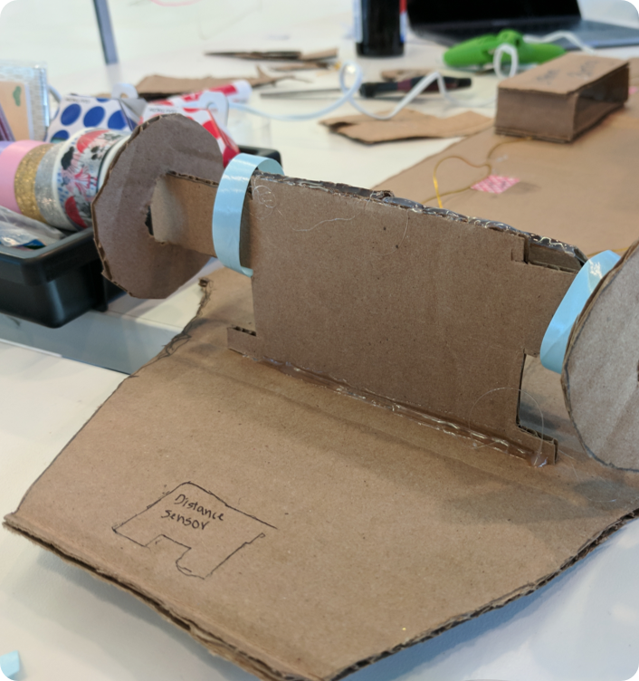
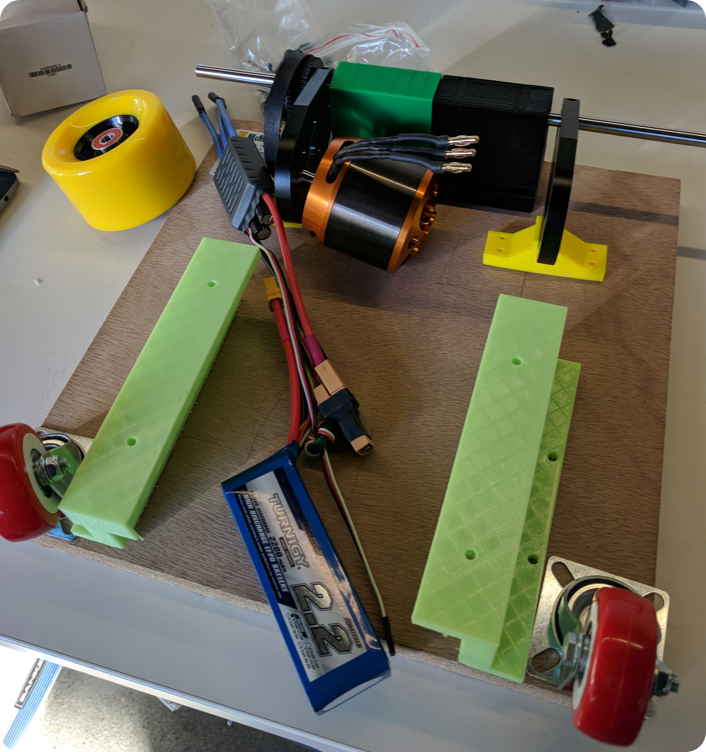
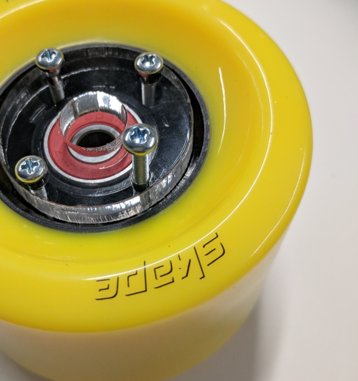
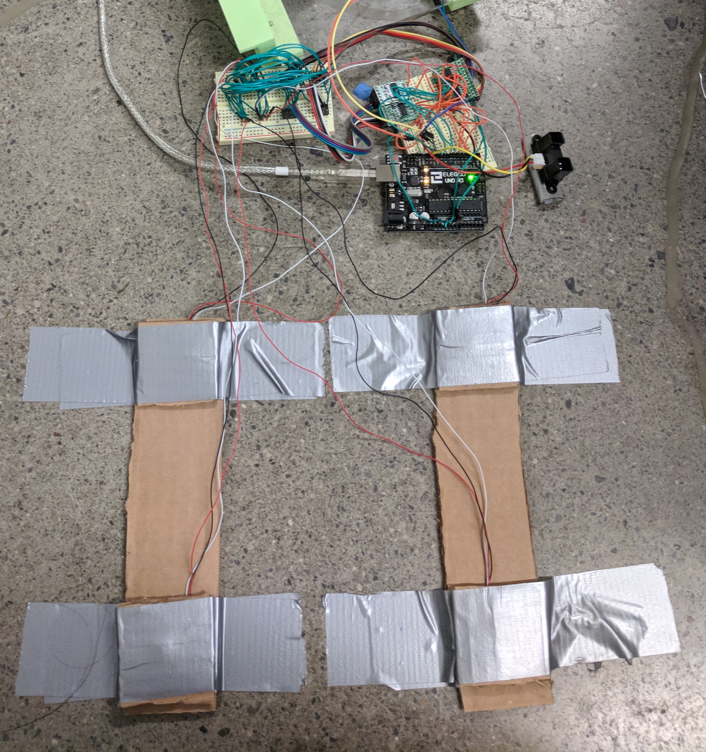
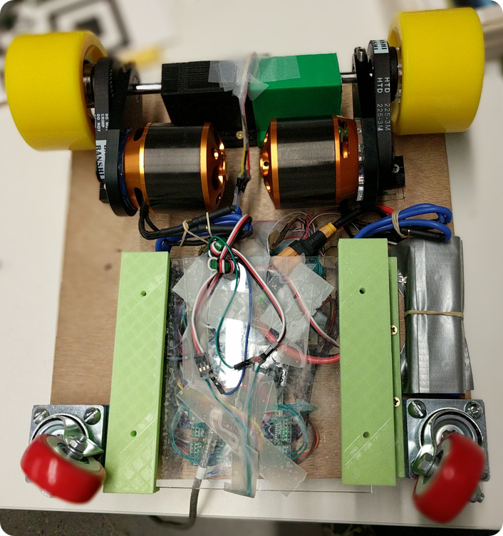
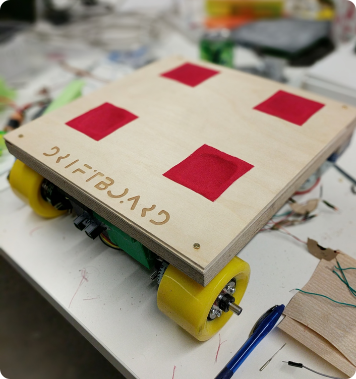
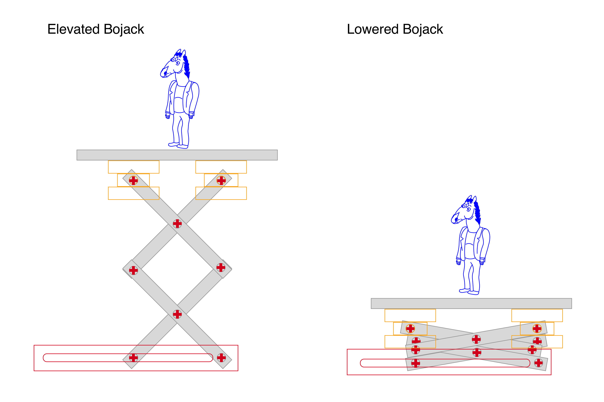
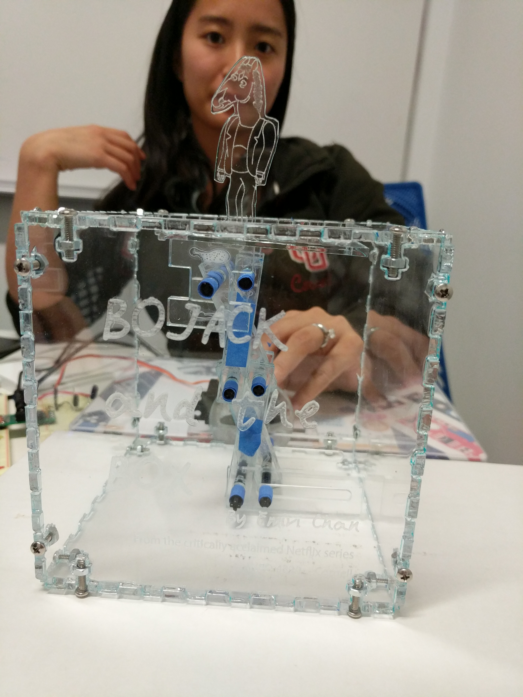
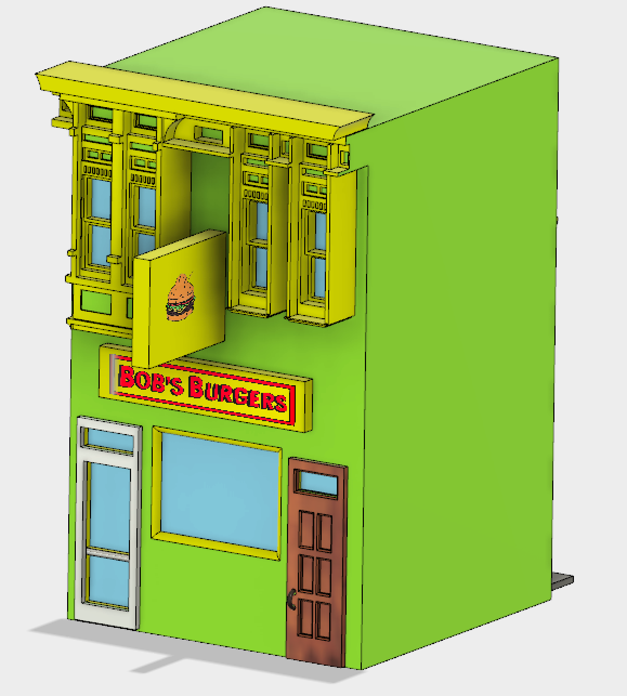
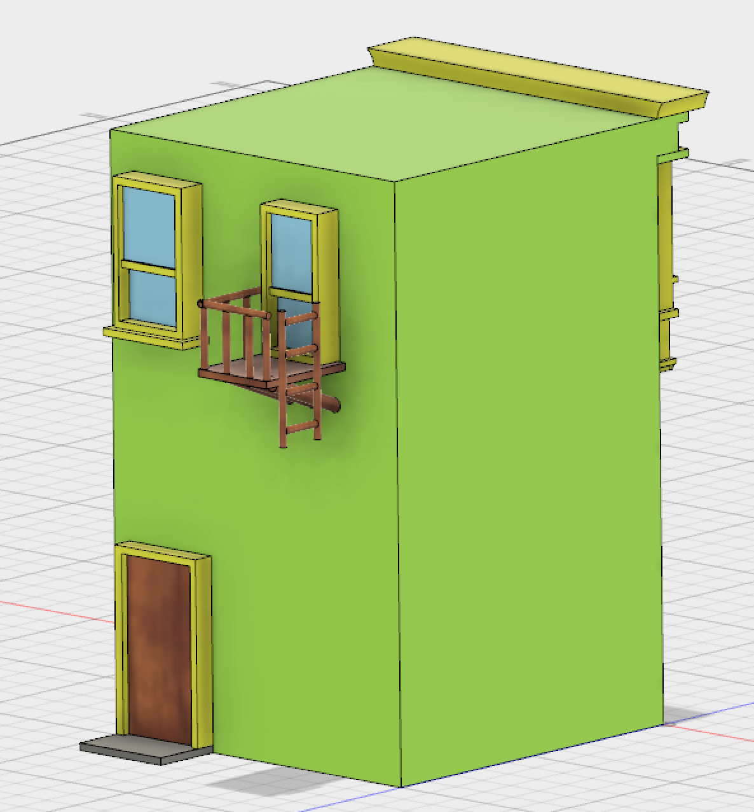

When I'm not doing UX, I like tinkering with Arduinos, laser cutting, 3D printing, and using Autocad. I love researching new projects, creating rapid prototypes, and having a physical product at the end!
Electric Skateboard
I created an electric skateboard with my teammates Will Celestin and Gustavo Anaya as part of Rapid Prototyping. We created a skateboard that runs on an Arduino Uno, with weight sensors on the top of the skateboard that allow the user to move forward and turn. There is a distance sensor that stops the skateboard when it detects objects in front. Through a series of quick iterations, I 3D skateboard parts that were strong enough to hold an adult and precise enough to fit the motor parts together.

Cardboard Prototype.

After designing in autocad, I 3d printed each piece.

Creating a cog-wheel connector piece strong enough to withstand the force of the motor.

Testing the weight sensors before putting pieces together.

Bottom of the skateboard, with arduino, motor circuits attached.

Top of the skateboard has weight sensors underneath the red fabric. I laser cut the top piece of wood.
Bojack in the box
I created a jack in the box based on my love for the critically acclaimed Netflix series Bojack Horseman. I created the figure of Bojack Horseman via illustrator. The whole box and scissor lift mechanism was cut via laser cutter. The scissor lift is powered via a servo that is connected to a Redbear (arduino). When Bojack rises up, the Bojack ending theme song plays.



Bob's Burgers
I wanted to see how 3 dimensional figures would look in Augmented reality, so I recreated the house/restaurant from Bob's Burgers using Autodesk's Fusion 360. I installed Entiti, which takes 3D pieces and puts them onto real surfaces. There was a learning curve to thinking about how to make a 2dimensional figure into a 3D object, but I really liked making the restaurant come to life.
